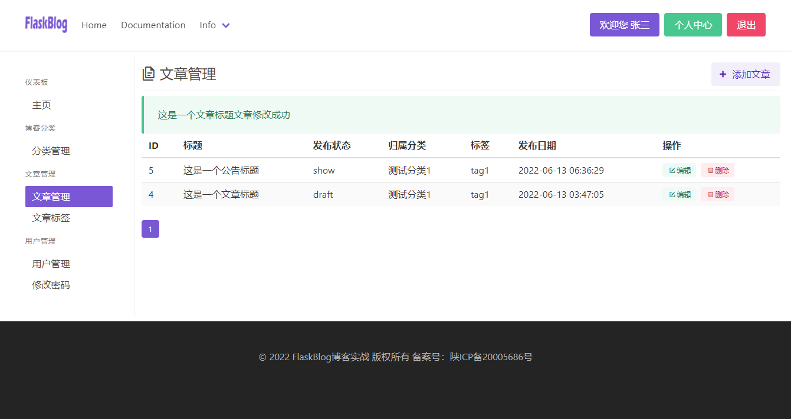
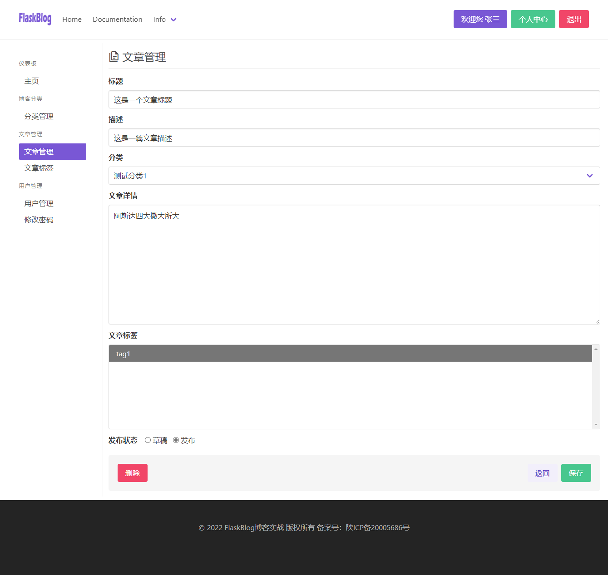

实现文章管理
文章管理的增删改查与我们在上一章节的分类增删改查基本一致，唯一不同的是添加文章的时候会同时添加分类及标签，一个是一对多的关系一个是多对多的关系，所以这一章节我们主要掌握这一个知识点即可！
- 最终效果如下：
 
实现查看文章列表
基本的逻辑思路是：查询出所有文章列表数据，并对其分页！
在app/admin/views.py中创建分类列表视图，代码如下：
@bp.route('/article')
@login_required
def article():
# 查看文章列表
page = request.args.get('page', 1, type=int)
pagination = Post.query.order_by(-Post.add_date).paginate(page, per_page=10, error_out=False)
post_list = pagination.items
return render_template('admin/article.html', post_list=post_list, pagination=pagination)
创建列表页html模板
在app/admin/templates/admin/目录下创建article.html模板
{% extends 'admin/index.html' %}
{% block member %}
<div class="is-block">
<div class=" is-pulled-left">
<h1 class=" is-size-4">
<span class="icon">
<i class="mdi mdi-file-document-multiple-outline"></i>
</span>
文章管理
</h1>
</div>
{% block button %}
<div class="is-pulled-right">
<a href="" class=" button is-primary is-light">
<span class="icon"><i class="mdi mdi-plus-thick"></i></span>
<span>添加文章</span>
</a>
</div>
{% endblock button %}
<div class="is-clearfix"></div>
<div class=" dropdown-divider"></div>
<!-- 消息闪现 -->
{% with messages = get_flashed_messages() %}
<b-message type="is-success">
{% if messages %}
<ul class=flashes>
{% for message in messages %}
<li>{{ message }}</li>
{% endfor %}
</ul>
{% endif %}
</b-message>
{% endwith %}
</div>
{% block table_content %}
<div class="table-container">
<table class="table is-fullwidth is-hoverable is-striped">
<thead>
<tr>
<th>ID</th>
<th>标题</th>
<th>发布状态</th>
<th>归属分类</th>
<th>标签</th>
<th>发布日期</th>
<th>操作</th>
</tr>
</thead>
<tbody>
{% for post in post_list %}
<tr>
<td>{{ post.id }}</td>
<td>{{ post.title }}</td>
<td>{{ post.has_type.name }}</td>
<td>{{ post.category.name }}</td>
<td>{{ post.tags|join(',') }} </td>
<td>{{ post.add_date }}</td>
<td>
<div class="tags">
<a href="" class="tag is-success is-light">
<span class="icon">
<i class="mdi mdi-square-edit-outline"></i>
</span>
编辑
</a>
<a href="" class="tag is-danger is-light">
<span class="icon">
<i class="mdi mdi-trash-can-outline"></i>
</span>
删除
</a>
</div>
</td>
</tr>
{% endfor %}
</tbody>
</table>
</div>
<nav class="pagination is-small" role="navigation" aria-label="pagination">
{% if pagination.has_prev %}
<a href="{{ url_for('admin.article') }}?page={{ pagination.prev_num }}" class="pagination-previous" title="This is the first page">Previous</a>
{% endif %}
{% if pagination.has_next %}
<a href="{{ url_for('admin.article') }}?page={{ pagination.next_num }}" class="pagination-next">Next page</a>
{% endif %}
<ul class="pagination-list">
{% for page in pagination.iter_pages() %}
{% if page %}
{% if page != pagination.page %}
<li>
<a href="{{ url_for('admin.article') }}?page={{ page }}" class="pagination-link" aria-label="Page 1" aria-current="page">{{ page }}</a>
</li>
{% else %}
<li>
<a class="pagination-link is-current" aria-label="Page 1" aria-current="page">{{ page }}</a>
</li>
{% endif %}
{% else %}
<span class=pagination-ellipsis>…</span>
{% endif %}
{% endfor %}
</ul>
</nav>
{% endblock table_content %}
{% endblock member %}
实现添加博客内容
在app/admin/forms.py中创建Post的表单类
class PostForm(FlaskForm):
# 添加文章表单
title = StringField('标题', validators=[
DataRequired(message="不能为空"),
Length(max=128, message="不符合字数要求！")
])
desc = StringField('描述', validators=[
DataRequired(message="不能为空"),
Length(max=200, message="不符合字数要求！")
])
has_type = RadioField('发布状态',
choices=(PostPublishType.draft.name, PostPublishType.show.name),
default=PostPublishType.show.name)
category_id = SelectField(
'分类',
choices=None,
coerce=int,
validators=[
DataRequired(message="不能为空"),
]
)
content = TextAreaField('文章详情',
validators=[DataRequired(message="不能为空")]
)
tags = SelectMultipleField('文章标签', choices=None, coerce=int)
这个表单类里边我们多了几个新的表单类，我们来逐一认识下
-
RadioField也就是单选按钮表单，其中chioces参数则是定义他的选项,我们这里直接引入定义的PostPublishType的名称即可 -
SelectField是下拉表单类，choices是选项，coerce定义该表单值得类型，默认为str，我们这里传递的是分类的主键，所以改为int -
SelectMultipleField多选表单，其他参数均与SelectField一致 -
TextAreaField则是多行输入表单
在app/admin/views.py中创建新增文章视图
@bp.route('/article/add', methods=['GET', 'POST'])
@login_required
def article_add():
# 增加文章
form = PostForm()
form.category_id.choices = [(v.id,v.name) for v in Category.query.all()]
form.tags.choices = [(v.id,v.name) for v in Tag.query.all()]
if form.validate_on_submit():
post = Post(
title=form.title.data,
desc=form.desc.data,
has_type=form.has_type.data,
category_id=int(form.category_id.data),
content=form.content.data,
)
post.tags = [Tag.query.get(tag_id) for tag_id in form.tags.data]
db.session.add(post)
db.session.commit()
flash(f'{form.title.data}文章添加成功')
return redirect(url_for('admin.article'))
return render_template('admin/article_form.html', form=form)
这里唯一要注意的是我们在表单创建的时候默认设置的分类和标签的选项值是None，那么在视图中初始化表单后，必须设置choices属性的值
form = PostForm()
form.category_id.choices = [(v.id,v.name) for v in Category.query.all()]
form.tags.choices = [(v.id,v.name) for v in Tag.query.all()]
这样子我们表单中就直接从数据库获取到了该两项的值！
其次再给category_id赋值的时候应该指定其类型为int
多对多赋值,记住列表的每一个值必须为一个对象：post.tags = [Tag.query.get(tag_id) for tag_id in form.tags.data]
创建表单模板
在app/admin/templates/admin/目录下创建一个article_form.html
{% extends 'admin/article.html' %}
{% block button %}{% endblock button %}
{% block table_content %}
<form action="" method="post" class="mt-4">
{{ form.csrf_token }}
<div class="field">
{{ form.title.label(class='label') }}
<div class="control">
{{ form.title(class='input', placeholder='标题') }}
</div>
</div>
<div class="field">
{{ form.desc.label(class='label') }}
<div class="control">
{{ form.desc(class='input', placeholder='描述') }}
</div>
</div>
<div class="field">
{{ form.category_id.label(class='label') }}
<div class="control">
<div class="select is-fullwidth">
{{ form.category_id }}
</div>
</div>
</div>
<div class="field">
{{ form.content.label(class='label') }}
<div class="control">
{{ form.content(class='textarea', rows="10", placeholder='文章详情') }}
</div>
</div>
<div class="field">
{{ form.tags.label(class='label') }}
<div class="control">
<div class="select is-fullwidth is-multiple">
{{ form.tags(size='5') }}
</div>
</div>
</div>
<div class="field is-horizontal">
{{ form.has_type.label(class='label') }}
<div class="field-body ml-4">
<div class="control">
<label class="radio">
<input type="radio" name="has_type" value="draft">
草稿
</label>
<label class="radio">
<input checked type="radio" name="has_type" value="show">
发布
</label>
</div>
</div>
</div>
<div class="is-block">
<div class="box has-background-light is-shadowless level">
<button class=" is-danger button level-left">删除</button>
<div class="level-right">
<a href="{{ url_for('admin.article') }}" class="button is-primary is-light mr-2">返回</a>
<input type="submit" value="保存" class=" button is-success">
</div>
</div>
</div>
</form>
{% endblock table_content %}
最后修改添加分类按钮的url即可：
路径：app/admin/templates/admin/article.html
{% block button %}
<div class="is-pulled-right">
<a href="{{ url_for('admin.article_add') }}" class=" button is-primary is-light">
<span class="icon"><i class="mdi mdi-plus-thick"></i></span>
<span>添加文章</span>
</a>
</div>
{% endblock button %}
实现修改博客内容
在app/admin/views.py中创建修改文章视图
@bp.route('/article/edit/<int:post_id>', methods=['GET', 'POST'])
@login_required
def article_edit(post_id):
# 修改文章
post = Post.query.get(post_id)
tags = [tag.id for tag in post.tags]
form = PostForm(
title=post.title, desc=post.desc,
category_id=post.category.id, has_type=post.has_type.value,
content=post.content, tags=tags
)
form.category_id.choices = [(v.id,v.name) for v in Category.query.all()]
form.tags.choices = [(v.id,v.name) for v in Tag.query.all()]
if form.validate_on_submit():
post.title = form.title.data
post.desc = form.desc.data
post.has_type = form.has_type.data
post.category_id=int(form.category_id.data)
post.content = form.content.data
post.tags = [Tag.query.get(tag_id) for tag_id in form.tags.data]
db.session.add(post)
db.session.commit()
flash(f'{form.title.data}文章修改成功')
return redirect(url_for('admin.article'))
return render_template('admin/article_form.html', form=form)
这里唯一需要注意的是在回显数据的时候多对多及一对多数据的回显需要特殊处理, 代码如下：
post = Post.query.get(post_id)
tags = [tag.id for tag in post.tags]
form = PostForm(
title=post.title, desc=post.desc,
category_id=post.category.id, has_type=post.has_type.value,
content=post.content, tags=tags
)
其他的修改则和保存逻辑基本一致，大家多加练习即可掌握！
实现删除博客
在app/admin/views.py中创建删除视图
@bp.route('/article/delete/<int:post_id>', methods=['GET', 'POST'])
@login_required
def article_del(post_id):
# 删除文章
post = Post.query.get(post_id)
if post:
db.session.delete(post)
db.session.commit()
flash(f'{post.title}文章删除成功')
return redirect(url_for('admin.article'))
最后，在删除按钮上增加该url即可
<a href="{{ url_for('admin.article_del', post_id=post.id) }}" class="tag is-danger is-light">
<span class="icon">
<i class="mdi mdi-trash-can-outline"></i>
</span>
删除
</a>
下一章节便是文章标签的增删改查，这一部分内容不做深入的讲解，大家自行完成，当留作作业吧！